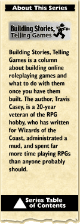

#19: Dirty Words, Part 4: PKby Travis S. Casey PK. Mention the term around mud veterans, and you're sure to get some reaction. Some people hate it. Some wouldn't play a game without it. People who hate it will tell you horror stories about things that have happened to their characters or other people's; people who love it will tell you exciting tales about how they've managed to outwit or outplay opponents — or sometimes, about how they've been outwitted or outplayed. Well, I'm sure someone out there is saying, "What's PK?", so I'd better give a quick definition. Those of you who already know what I'm talking about, feel free to skip to the next paragraph. PK stands for Player Killing (a bad choice of terms, since it's characters who get killed and not players, but never mind that). Player killing is when characters in a multiuser online game are allowed to attack and kill each other's characters. Some games don't allow it at all — players can attack monsters and NPCs, but not each other's characters. Some games allow any player's character to attack any other. And some are in between, allowing some player characters to attack some other player characters. Let's start on the side of reasons to like PK. Here's the main ones you'll hear from PK fans:
The interesting thing is that the reasons why others dislike PK are almost a mirror image of why PK fans like it:
We see here one of the classic rules — you can't keep all of the people happy all of the time. There are plenty of people willing to try, though, which is where the middle ground mentioned above comes in — that of allowing PK in some cases, but not in others. Some of the common restrictions are:
Methods of enforcement of rules vary. Under some setups, enforcement is by the game's admins or other players. Some have automatic enforcement, where if you try to attack someone you're not allowed to, you just get a "you can't do that" message. Still others have game-world enforcement, where you can attack someone in a situation where you're not supposed to, but something bad will happen if you do — for example, if there's a city where no attacks are allowed, a player character who attacks someone might find that several NPC police officers are sent out to capture and jail his/her character. One thing that happens universally, though, is that someone will try to get around the rules. Depending on the game, there can be a lot of ways to do this. A popular method is to set a trap — for example, capture a vicious monster and put it where you know the victim is going to go. Using proxies can be another method — if Joe the Paladin's player wants to attack Theresa the Pure's player for some reason, he/she might get an evil character's player to do it. These sorts of tactics are used between characters who should be able to attack each other as well, of course, but that sort of use isn't as likely to incite protests. There have been attempts to prevent this sort of thing by tracking a sort of "chain of responsibility". That is, if Character A moves a monster somewhere, then the game treats any attack the monster makes as if Character A had done it. Unfortunately, the problem is currently impossible to solve in the general case — to automatically take care of one player asking another to do something, for example, would require the game to be able to have a real understanding of everything that's said on the game. And even that wouldn't necessarily do it, since there's no way to prevent one player from contacting another outside the game and arranging something. Most games wind up handling such working about the rules by more traditional means — namely, investigation and punishment through the game admins. This, unfortunately, can often cause problems for the admins — if accusations are true, the guilty party is likely to deny it, and hard evidence can be hard to produce. If the guilty party has a good number of friends, they can cause a groundswell of opinion against the admins. On the other hand, there can also be cases of mistaken accusations, which may cause bad feelings however they turn out, and sometimes even outright false accusations, which again can cause problems. Well... that's described PK, and the simple reasons for and against... next time, join me for part 2 of the PK part of this series, where I'll mull over the pluses and minuses of PK, and talk about some ideas for alternative ways to set up PK.
|